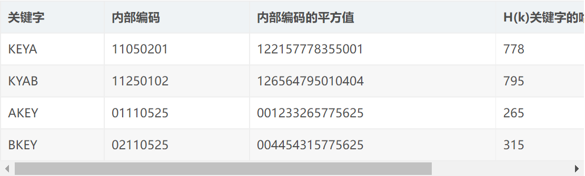
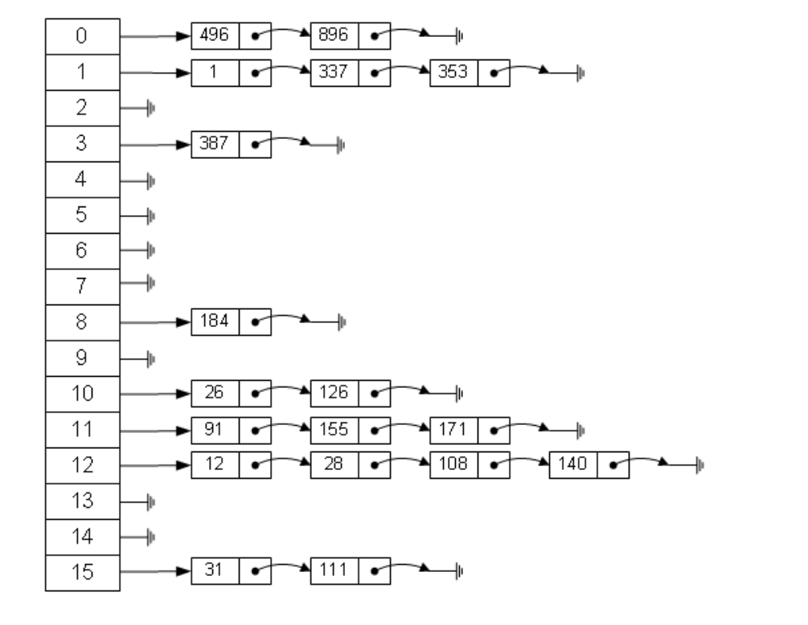
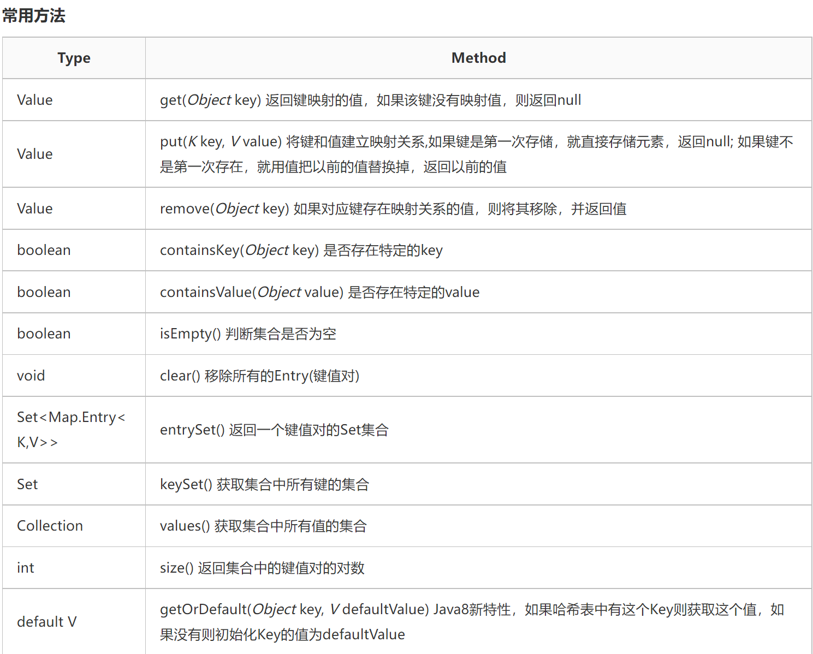

Java哈希表
哈希表介绍（数据结构）
1. 特点
是一种有效的存储方式，是不与其他元素进行比较，一次存取便能得到所需要的记录
2. 建立
在对象的存储位置和对象的关键属性（设为 k）之间建立一个特定的对应关系（设为 f），使每个对象与一个唯一的存储位置相对应
3. 查找
只要根据待查对象的关键属性 k 计算f(k)的值即可。如果此对象在集合中，则必定在存储位置 f(k)上，因此不需要与集合中的其他元素进行比较
哈希算法介绍（算法）
1. 名词解释
①Map：是映射、地图的意思，在Java中Map表示一种把K映射到V的数据类型；
②HashMap：Java中用哈希数据结构实现的Map
2. Hash算法是什么？
英语翻译
hash 英 [hæʃ] 美 [hæʃ] n. 剁碎的食物；混杂，拼凑；重新表述 vt. 搞糟，把…弄乱；切碎；推敲 n. (Hash)人名；(阿拉伯、保、英)哈什；(西)阿什
Hash算法
这类算法接受任意长度的二进制输入值，对输入值做换算（切碎），最终给出固定长度的二进制输出值；
代表的是一类算法而不是一种算法，以更好理解的方式来说，Hash算法是摘要算法 ：也就是说，从不同的输入中，通过一些计算摘取出来一段输出数据，值可以用以区分输入数据
3. 哈希算法有什么用？
（1）信息安全领域
①Hash算法 可用作加密算法。
②如文件校验：通过对文件摘要，可以得到文件的“数字指纹”，你下载的任何副本的“数字指纹”只要和官方给出的“数字指纹”一致，那么就可以知道这是未经篡改的。例如著名的MD5
（2）数据结构领域
①Hash算法 通常还可用作快速查找。
②这是今天我想说的部分。根据Hash函数我们可以实现一种叫做哈希表（Hash Table）的数据结构。这种结构可以实现对数据进行快速的存取。
哈希函数介绍（支撑哈希表的一类函数）
1. 特点
①灵活
哈希函数是一个映像，因此哈希函数的设定很灵活，只要使得任何关键字由此所得的哈希函数值都落在表长允许的范围之内即可。
②冲突
对不同的关键字可能得到同一哈希地址，这种现象称为冲突（collision）；
冲突只能尽量地少，而不能完全避免。因为，哈希函数是从关键字集合到地址集合的映像。而通常关键字集合比较大，它的元素包括所有可能的关键字，而地址集合的元素仅为哈希表中的地址值。因此，在实现哈希表这种数据结构的时候不仅要设定一个“好”的哈希函数，而且要设定一种处理冲突的方法。
2. 需考虑因素
（1）Hash函数 执行的时间
（2）关键字 的长度
（3）Hash表 的大小
（4）关键字 的分布情况
（5）记录 的查找频率
3. 函数构造方法
（1）直接寻址法
取k 或k 的某个线性函数为Hash地址 。
特点：由于直接地址法相当于有多少个关键字就必须有多少个相应地址去对应，所以不会产生冲突，也正因为此，所以实际中很少使用这种构造方法。
（2）数字分析法
首先分析待存的一组关键字 ，比如是一个班级学生的出生年月日 ，我们发现他们的出生年 大体相同，那么我们肯定不能用他们的年 来作为存储地址 ，这样出现冲突 的几率很大；但是，我们发现月日 的具体数字差别很大，如果我们用月日 来作为Hash地址 ，则会明显降低冲突几率。因此，数字分析法就是找出关键字 的规律，尽可能用差异数据来构造Hash地址 ；
特点：需要提前知道所有可能的关键字，才能分析运用此种方法，所以不太常用。
（3）平方取中法
- 先求出关键字的平方值，然后按需要取平方值的中间几位作为哈希地址。这是因为：平方后中间几位和关键字中每一位都相关，故不同关键字会以较高的概率产生不同的哈希地址。
- 例：我们把英文字母在字母表中的位置序号作为该英文字母的内部编码。例如K的内部编码为11，E的内部编码为05，Y的内部编码为25，A的内部编码为01, B的内部编码为02。由此组成关键字“KEYA”的内部代码为11052501，同理我们可以得到关键字“KYAB”、“AKEY”、“BKEY”的内部编码。之后对关键字进行平方运算后，取出第7到第9位作为该关键字哈希地址，如下图所示：

- 特点：较常用
（4）折叠法
- 将关键字分割成位数相同的几部分（最后一部分位数可以不同），然后取这几部分的叠加和（去除进位）作为散列地址。数位叠加可以有移位叠加和间界叠加两种方法。移位叠加是将分割后的每一部分的最低位对齐，然后相加；间界叠加是从一端向另一端沿分割界来回折叠，然后对齐相加。
（5）随机数法
- 选择一个随机函数，取关键字的随机函数值作为Hash地址 ，通常用于关键字长度不同的场合。
- 特点：通常，关键字长度不相等时，采用此法构建Hash函数 较为合适。
（6）除留余取法
- 取关键字被某个不大于Hash表 长m 的数p 除后所得的余数为Hash地址 。
- 特点：这是最简单也是最常用的Hash函数构造方法。可以直接取模，也可以在平法法、折叠法之后再取模。
- 值得注意的是，在使用除留取余法 时，对p 的选择很重要，如果p 选的不好会容易产生同义词 。由经验得知：p 最好选择不大于表长m的一个质数 、或者不包含小于20的质因数的合数。
处理冲突
描述
假设哈希表的地址集为，冲突是指由关键字得到的哈希地址为的位置上已存有记录，则“处理冲突”就是为该关键字的记录找到另一个“空”的哈希地址。在处理冲突的过程中可能得到一个地址序列。即在处理哈希地址的冲突时，若得到的另一个哈希地址仍然发生冲突，则再求下一个地址，若仍然冲突，再求，依次类推，直至不发生冲突为止，则为记录在表中的地址。（需要注意此定义不太适合链地址法）
方法
（1）开放定址法
（2）再哈希法
（3）链地址法
（4）公共溢出区
Java中使用Map和HashMap
HashMap
- Map<K, V>是一个以 键值(Key)-数值(Value) 对应形式存储数据的接口。 在数组中我们是通过数组下标来对其内容索引的，而在Map中我们通过对象来对对象进行索引，用来索引的对象叫做key，其对应的对象叫做value。
- HashMap是Map<K, V>的实现类。(Hashtable也是Map<K, V>的实现类) HashMap存储数据采用哈希表结构 ，元素的存取顺序不能保证一致。但键值是唯一、不重复的。
- HashMap是基于数组来实现哈希表的，数组就好比内存储空间，数组的index就好比内存的地址；
- HashMap的每个记录就是一个Entry<K, V>对象，数组中存储的就是这些对象；
- HashMap的哈希函数 = 计算出hashCode + 计算出数组的index；
- HashMap解决冲突：使用链地址法，每个Entry对象都有一个引用next来指向链表的下一个Entry；
- HashMap的装填因子：默认为0.75；
基本上HashMap就像这样：

- 引入HashMap和Map并建立哈希表
import java.util.HashMap;
import java.util.Map; - Map<k,v>
Map Ages = new HashMap();
// 这是用接口的形式实现哈希表
// Key是String类型，Value是Integer类型 - 常用方法
